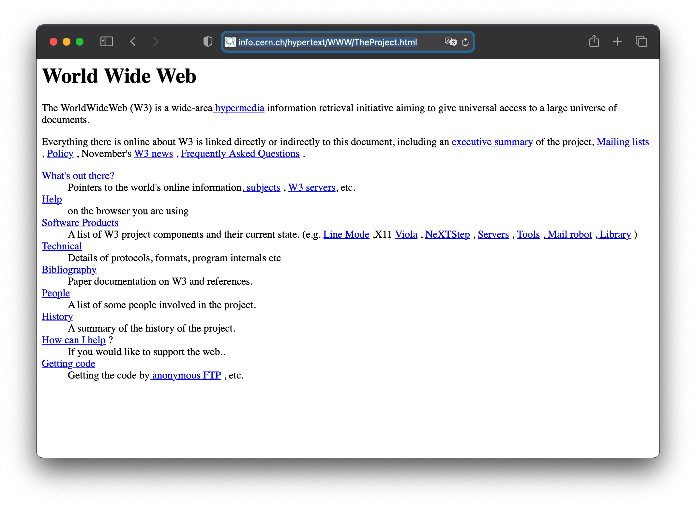
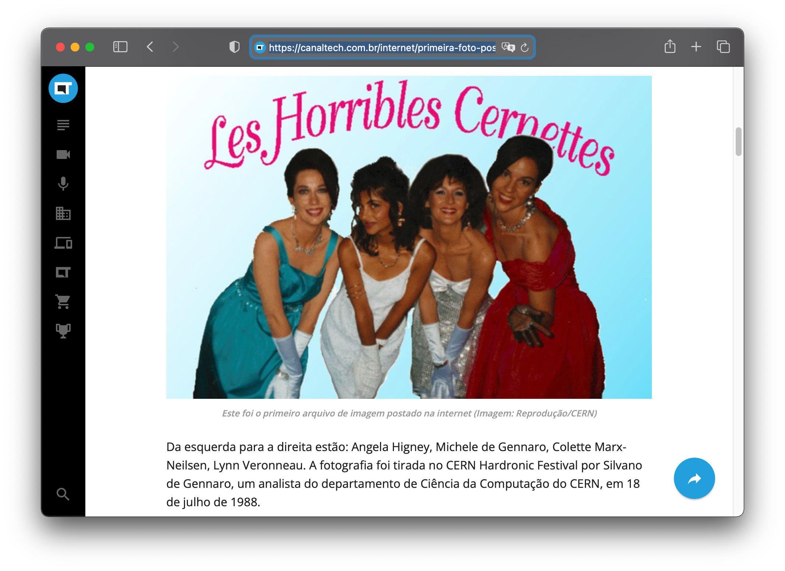

História da computação
História da Computação
Os computadores, assim como diversas outras tecnologias ou dispositivos, são equipamentos desenvolvidos pelo homem com o objetivo de ajudá-los a resolver algumas tarefas. Atualmente, os computadores estão presentes em nossas vidas de uma forma nunca vista antes, seja na escola, em casa, no trabalho e até mesmo em nossos bolsos, como é o caso dos chamados smartphones.
A história da computação tem início há mais de 7.000 anos. Na antiguidade...
Entenda a diferença
Vamos diferenciar
- Computadores: dispositivos eletrônicos, formados por um conjunto de circuitos e componentes integrados, que se destinam a receber e processar dados para a realização de diversas operações.
- Computação: apresenta uma ideia de contar ou calcular, mas, geralmente é muito utilizada como sinônimo de informática. A computação pode ser definida como a busca de uma solução para um problema, a partir de entradas, que alimentam algum tipo de processamento, e estes produzem saídas.
Quando surgiu a Ciência da Computação?
A partir da década de 1950, a computação começou a ser entendida como ciência, e, consequentemente, começou-se a cunhar o termo Ciência da Computação.
Na idade antiga, muitos povos já utilizavam o Ábaco para realizar cálculos voltados ao comércio de mercadorias, e também para auxiliar da construção civil. O Ábaco é considerado por muitos como a primeira máquina desenvolvida para a realização mais rápida de alguns cálculos. O ábaco é formado, basicamente, por um conjunto de varetas, de forma paralela, que contém pequenas bolas que realizam a contagem. Seu primeiro registro é datado do ano de 5.500 antes de Cristo e, isso, pelos povos que constituíam ali a Mesopotâmia. No entanto, com o passar do tempo, o Ábaco também foi sendo usado por muitas outras culturas, incluindo, a Babilônia, o Egito, a Grécia, Roma, a Índia, a China, o Japão, e diversos outros povos. Durante vários séculos, o Ábaco foi sendo desenvolvido e aperfeiçoado, tornando-se a principal ferramenta de cálculo por muito tempo.
Visão geral do Hardware
A computação moderna provavelmente pode ser rastreada até o ‘Harvard Mk I’ e o Colossus (ambos de 1943).
Harvard MK I
O ‘Harvard Mk I’ era um computador programável eletromecânico de uso geral construído na Universidade de Harvard com o apoio da IBM. Esses computadores estavam entre os primeiros computadores da ‘primeira geração’.
Colossus
Colossus era um computador eletrônico construído na Grã-Bretanha no final de 1943 e projetado para quebrar o sistema de codificação alemão - a cifra de Lorenz.
1a geração de computadores
Os computadores da primeira geração eram normalmente baseados em circuitos com fio contendo válvulas de vácuo e cartões perfurados usados como o meio de armazenamento principal (não volátil).
ENIAC
Outro computador de uso geral dessa época foi o ‘ENIAC’ (Integrador Numérico Eletrônico e Computador) que foi concluído em 1946.
1a geração de computadores - características
- Era típico de computadores de primeira geração, pesava 30 toneladas, continha 18.000 válvulas eletrônicas e consumia cerca de 25KW de energia elétrica. No entanto, era capaz de fazer incríveis 100.000 cálculos por segundo.
- O próximo grande passo na história da computação foi a invenção do transistor em 1947. Isso substituiu as válvulas ineficientes por um componente muito menor e mais confiável.
2a geração de computadores
- Os computadores transistorizados são normalmente chamados de ‘Segunda Geração’ e dominaram o final da década de 1950 e o início da década de 1960. Apesar de usar transistores e circuitos impressos, esses computadores ainda eram volumosos e estritamente de domínio de universidades e governos.
3a geração de computadores
- A explosão no uso de computadores começou com os computadores da ‘Terceira Geração’. Estes se basearam na invenção de Jack St. Claire Kilby - o circuito integrado ou microchip;
- o primeiro circuito integrado foi produzido em setembro de 1958, mas os computadores que os utilizavam não começaram a aparecer até 1963.
- Enquanto grandes ‘mainframes’ como o IBM 360 aumentaram ainda mais as capacidades de armazenamento e processamento, o circuito integrado permitiu o desenvolvimento de mini-computadores que começaram a levar a computação para muitas empresas menores.
3a geração de computadores (cont.)
A integração de circuitos em grande escala levou ao desenvolvimento de unidades de processamento muito pequenas.
- Um exemplo inicial disso é o processador usado para analisar dados de voo no jato de combate F14A ‘TomCat’ da Marinha dos EUA. Este processador foi desenvolvido por Steve Geller, Ray Holt e uma equipe da AiResearch e American Microsystems.
4a geração de computadores
-
Em 15 de novembro de 1971, a Intel lançou o primeiro microprocessador comercial do mundo, o 4004. Os computadores de quarta geração foram desenvolvidos, usando um microprocessador para localizar grande parte das habilidades de processamento do computador em um único (pequeno) chip. Juntamente com uma das invenções da Intel
-
o chip RAM (quilobits de memória em um único chip)
- o microprocessador permitiu que os computadores de quarta geração fossem ainda menores e mais rápidos do que nunca.
- O 4004 era capaz de apenas 60.000 instruções por segundo, mas os processadores posteriores (como o 8086 que todos os processadores da Intel para o IBM PC e compatíveis se baseiam) trouxeram velocidade e potência cada vez maiores para os computadores.
- Os supercomputadores da época eram imensamente poderosos, como o Cray-1, que podia calcular 150 milhões de operações de ponto flutuante por segundo.
4a geração de computadores (cont.)
- O microprocessador permitiu o desenvolvimento de microcomputadores, computadores pessoais que eram pequenos e baratos o suficiente para estarem disponíveis para as pessoas comuns.
- O primeiro computador pessoal foi o MITS Altair 8800, lançado no final de 1974, mas foi seguido por computadores como o Apple I e II, Commodore PET e, por fim, o IBM PC original em 1981.
- Embora o poder de processamento e as capacidades de armazenamento tenham aumentado além de todo o reconhecimento desde a década de 1970, a tecnologia subjacente de microchips LSI (integração em grande escala) ou VLSI (integração em muito grande escala) permaneceu basicamente a mesma, então é amplamente considerado que a maioria dos computadores de hoje ainda pertencem à quarta geração.
Visão geral do histórico da Internet
- A história da Internet pode ser rastreada até a ARPANET - que foi iniciada pelo Departamento de Defesa dos Estados Unidos para pesquisas em redes em algum momento de 1969.
- Muitas pessoas queriam colocar suas ideias nos padrões de comunicação entre os computadores que compunham essa rede, então um sistema foi desenvolvido para apresentar ideias.
- Basicamente, você escreveu suas ideias em um artigo chamado 'Request for Comments' (RFC, para abreviar) e deixou que todos os demais lessem. As pessoas comentaram e aprimoraram suas ideias em novos RFCs.
- A primeira RFC (RFC0001) foi escrita em 7 de abril de 1969. Existem agora bem mais de 2.000 RFCs, descrevendo todos os aspectos de como a Internet funciona.
O primeiro IMP
- O primeiro Interface Message Processor (IMP) foi conectado e ligado no laboratório de Len Kleinrock na UCLA em 2 de setembro de 1969, formando o início de uma rede real para testar as ideias.
- A ARPAnet foi aberta para usuários não militares no final da década de 1970, e os primeiros a comprá-la foram as grandes universidades - embora nesse estágio ela não se parecesse em nada com a Internet que conhecemos hoje.
- As conexões internacionais (ou seja, fora da América) começaram em 1972, mas a internet ainda era apenas uma forma de os computadores se comunicarem e de pesquisa em rede, não existia a World Wide Web e nenhum e-mail como a conhecemos agora.
Quando surgiram os primeiros serviços na Web?
Não foi até meados da década de 1980 que os serviços que agora mais usamos na Internet começaram a aparecer. - O conceito de 'nomes de domínio', coisas como 'microsoft.com' e 'servidores de nomes de domínio' especiais nem sequer havia sido introduzido até 1984 - antes disso, todos os computadores eram apenas endereçados por seus endereços IP (números). - A maioria dos protocolos usados para e-mail e outros serviços surgiram depois disso - embora o próprio e-mail já existisse há muito mais tempo, a forma como era enviado entre as instituições era menos padronizada.
A Internet
A parte da Internet com a qual a maioria das pessoas provavelmente está mais familiarizada é a World Wide Web. - Trata-se de uma coleção de páginas com hiperlinks de informações distribuídas pela Internet por meio de um protocolo de rede denominado HTTP (protocolo de transferência de hipertexto). - Isso foi inventado por Tim Berners-Lee em 1989. Ele era um físico que trabalhava no CERN, o Laboratório Europeu de Física de Partículas, e ele queria uma forma dos físicos compartilharem informações sobre suas pesquisas - a World-Wide-Web era sua solução. - Assim, a web foi iniciada, embora nessa época fosse somente texto. - Os gráficos vieram depois com um navegador chamado NCSA Mosaic. - Tanto o Internet Explorer quanto o Netscape da Microsoft foram originalmente baseados no NCSA Mosaic.
A Interface gráfica para a Internet
- A interface gráfica abriu a Internet para usuários novatos e em 1993 seu uso explodiu quando as pessoas foram autorizadas a 'discar' para a Internet usando seu computador em casa e um modem para ligar para um 'Provedor de Serviços de Internet' (ISP) para obter sua conexão com esta (agora enorme) rede.
- Antes disso, os únicos computadores conectados estavam em universidades e outras grandes organizações que podiam contratar cabos entre si para transferir os dados;
- Agora, qualquer um pode usar a Internet e ela evoluiu para a 'Superestrada da Informação' que conhecemos e (possivelmente) ainda evoluirá ainda mais num futuro próximo.
O primeiro site da história
Primeiro site da história estreava há 30 anos
 Disponível em: http://info.cern.ch/hypertext/WWW/TheProject.html. Acesso em 11 ago. 2021.
A primeira foto postada na Internet
Primeira foto postada na Internet
 Disponível em: https://canaltech.com.br/internet/primeira-foto-postada-na-internet-conheca-a-curiosa-historia-desse-marco-da-web-192155/. Acesso em 11 ago. 2021.
Uma breve história dos Sistemas de Janelas
- O primeiro conceito de um sistema de janelas (ou WIMP - janelas, ícones, menus e ponteiros) apareceu dentro do Centro de Pesquisas de Palo Alto (PARC) da Xerox em 1973.
- O computador 'Alto' só estava disponível internamente, não foi até 1981 que A Xerox lançou a versão refinada para o mundo: o sistema 8010 ('Star').
A ideia
- Essa ideia foi então usada pela Apple, primeiro para o Applie 'LISA', e depois novamente em 1984, quando eles desenvolveram o sistema operacional MacOS para uso em seu Apple Macintosh.
- A Microsoft seguiu em frente, lançando a primeira versão do 'Windows' em 1985. O Windows era uma GUI (interface gráfica do usuário) para seu próprio sistema operacional (MS-DOS) que vinha com IBM PC e computadores compatíveis desde 1981.
Windows
- O Windows foi projetado um pouco parecido com o MacOS, mas infelizmente era tão semelhante que a Apple decidiu levar a Microsoft ao tribunal por causa disso... um processo que duraria muitos anos.
- Esta primeira versão do Windows não era muito poderosa e, portanto, não era muito popular.
- A popularidade aumentou com o lançamento do Windows 2 em 1987.
- A primeira versão realmente popular do Windows foi a versão 3.0, lançada em 1990.
Windows 3.0
- Esta versão 3.0 do Windows se beneficiou dos gráficos aprimorados disponíveis nos PCs nessa época, e também do processador 80386 que permitia multitarefa 'verdadeiras' dos aplicativos do Windows.
- Isso o tornou mais eficiente e confiável ao executar mais de um software por vez.
- O Windows até permitia a execução e multitarefa de softwares baseados em MS-DOS mais antigos.
- O Windows 3.0 fez do IBM PC um competidor sério para o Mac da Apple.
- Várias melhorias - Windows 3.1 e Windows 3.11 foram lançadas, embora para o usuário fossem muito semelhantes ao Windows 3.0.
OS/2 da IBM
- Também disponível em uma época semelhante ao Windows 3.0 estava o OS/2 da IBM (escrito em parceria com a Microsoft).
- Isso foi seguido pelo OS/2 Warp, que era um sistema operacional completo de 32 bits projetado exclusivamente para os processadores 80386 e melhores.
- Ele foi lançado muito antes do Windows 95 e contava com muitos recursos semelhantes. Infelizmente, a IBM falhou em comercializá-lo com sucesso suficiente e não pegou.
Windows 95
- O Windows 95 foi lançado em 1995 (sem surpresas), em agosto.
- Embora compartilhasse muito código com o Windows 3 e até com o MS-DOS, o Windows 95 tinha duas grandes vantagens.
- Em primeiro lugar, era um sistema operacional inteiro, você não precisava mais comprar o MS-DOS e depois instalar o Windows em cima dele.
- Em segundo lugar, ele foi especialmente escrito para processadores 80386 e melhores e fez uso 'total' dos recursos de 32 bits. Nesse aspecto, o Windows 95 se aproximou do Windows NT.
Windows NT
- O Windows NT (Nova Tecnologia) foi desenvolvido junto com o Windows para uso em servidores e empresas.
- Ele foi projetado para ser mais confiável e seguro do que o Windows 95, mas em compensação é menos compatível com software baseado em MS-DOS mais antigo (crucialmente para o mercado doméstico, ele não roda muitos videogames).
Windows 98
- 1998 (25 de junho) viu o lançamento do Windows 98, que é muito semelhante ao Windows 95, exceto que forneceu um sistema de arquivamento aprimorado (que controla a maneira como os dados são armazenados nos discos).
- As melhorias permitiram que ele suportasse discos maiores que o 2 GB permitidos pela primeira versão do Windows 95. O Windows 98 também trouxe suporte para USB e AGP.
Windows 2000
- O objetivo da Microsoft - com o Windows 2000 - era mesclar as duas versões separadas do Windows (Windows 95/8 e Windows NT) em um produto. Isso falhou.
- O Windows 2000 foi baseado no Windows NT; internamente, ele costuma se referir a si mesmo como 'NT 5', mas possuia uma interface um pouco mais bonita e um nome mais interessante do que os membros anteriores da série NT.
- Por causa da proteção da memória (que ajuda a fornecer confiabilidade e segurança para a série NT).
- O Windows 2000 não podia executar alguns dos 'softwares legados' (em jogos específicos) que o Windows 95 e 98 podem.
- Isso resultou no desenvolvimento do Windows Millenium Edition (ME), um novo membro da família 95/98.
Windows XP
- O próximo lançamento importante do Microsoft Windows foi o 'Windows XP';
- novamente a intenção da Microsoft era que este lançamento substituísse as versões anteriores do Windows:
- NT/2000 e a família 95/8/ME.
- Mais uma vez, o Windows XP é realmente uma continuação da linha de produtos do Windows NT, mas desta vez a Microsoft teve sucesso em vendê-lo para usuários domésticos que tradicionalmente compram 95, 98 ou ME.
- Esse sucesso foi parcialmente devido à tecnologia aprimorada, mas principalmente porque muito tempo (6 anos ou mais) havia se passado desde o primeiro lançamento do Windows 95 (que marcou o fim do desenvolvimento do MS-DOS).
- Isso significava que grande parte do software MS-DOS/não-Windows 'legado' (e, em particular, jogos) que causava problemas no Windows 2000 tinha sido reescrito ou substituído para funcionar corretamente no Windows, portanto, não era mais um problema para Windows XP.
- novamente a intenção da Microsoft era que este lançamento substituísse as versões anteriores do Windows:
A aparência das janelas
- Tudo isso em meio a questão do processo judicial entre a Apple e a Microsoft, aquele que a Apple iniciou em 1985 ao tentar processar a Microsoft por copiar a 'aparência' de seu sistema operacional.
- Bem, a resposta foi que em 1997, 6 de agosto, após 18 meses de perdas da Apple, a Microsoft ajudou a 'salvá-los' de sérios problemas financeiros comprando 100.000 ações sem direito a voto da empresa por US$150mi.
- A Microsoft tinha várias razões políticas para fazer isso, mas, uma condição era que a Apple desistisse desse processo judicial de longa duração.
X Window System
- Também vale a pena mencionar outro sistema de janelas, o 'X Window System'.
- Ele foi desenvolvido no MIT, a partir de 1984, para uso em estações de trabalho gráfico.
- Devido em grande parte à disponibilidade do código-fonte usado para escrevê-lo, ele se tornou a interface gráfica padrão em muitos sistemas baseados em Unix - incluindo a maioria das distribuições Linux.
- Embora o X Window System forneça funcionalidade para desenhar e mover janelas na tela e também para fornecer um cursor do mouse, ele não fornece nenhum dos recursos de interface do usuário (como botões, menus, barras de título de janela e assim por diante) que as pessoas esperam.
- Esses recursos são fornecidos por outros softwares, gerenciadores de janelas, kits de ferramentas gráficas e semelhantes.
- Os ambientes de desktop gráficos mais populares no Linux contam com o X Window System, mas também fornecem todos os outros recursos próprios - fornecendo assim uma interface integrada e uniforme para o usuário. Os mais populares deles são KDE e GNOME.
- Os usuários do Solaris possuem CDE, que fornece funcionalidade semelhante para suas estações de trabalho.
Referências
- White, S. A Brief History of Computing. Disponível em: http://trillian.randomstuff.org.uk/~stephen/history/. Acesso em: 9 ago. 2021.
- Computer Pioneers and Pioneer Computers (part 1): https://youtu.be/qundvme1Tik
- Computer Pioneers and Pioneer Computers (part 2): https://youtu.be/wsirYCAocZk